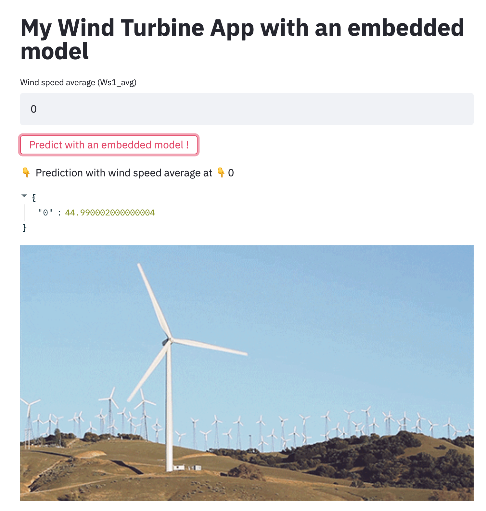

A l'issue de cette section, vous aurez découvert
- Comment fonctionne une simple API Flask,
- Le pattern d'exposition
embedded model, - Le pattern d'exposition
model as a service, - Le pattern d'exposition
model published as data,
Flask est un microserveur d'application. Il est souvent utilisé en Python pour développer des APIs et exposer des ressources.
Exposition "model as a service"
- Se rendre dans
dsin2/exposition/model_as_a_service/ - Démarrer le serveur Flask d'exposition avec
FLASK_APP=inference.py python -m flask run
Le serveur d'exposition est désormais disponible sur le port 5000 http://localhost:5000, avec:
- la route de healthcheck
/healthpour vérifier que le service est fonctionnel, - la route
/predictpour demander une prédiction- Il est possible de demander une prédiction en spécifiant une valeur pour la feature explicative
Ws1_avg
- Il est possible de demander une prédiction en spécifiant une valeur pour la feature explicative

⚠ Le serveur Flask ne sera pas consultable dans votre navigateur !
Dans votre terminal, avec l'outil en ligne de commande cURL, réalisez les requêtes HTTP suivantes:
- explorez le code de l'API Flask dans
dsin2/exposition/model_as_a_service/inference.py, - requêtez l'url de
healthcheckdu service pour s'assurer qu'il fonctionne (http://localhost:5000/health), - requêtez une prédiction sur http://localhost:5000/predict,
- requêtez une prédiction pour une
Wind Speedde 0, 10, 50, 100.
La manipulation sera faite par les formateurs
Dans le dossier exposition/ se trouvent un fichier docker-compose.yaml, exécutable avec docker-compose up.
Une fois lancée, l'application streamlit est accessible sur http://localhost:8092 et le service Flask est disponible sur http://localhost:5000/health.
Dans le dossier exposition/model_as_a_service/ se trouve la définition de ces 2 services:
- une application de dashboarding construite avec Streamlit dans
app.py, - un service d'inférence construit avec Flask dans
inference.py.
L'application streamlit permet d'afficher une prédiction à la demande selon la valeur de Ws1_avg spécifiée par l'utilisateur.

- Modifier la valeur de
Wind Speed Averageà 0, 10, 20, 50, 100 et demander une prédiction - Observer les logs de docker-compose, et constater que le service Flask réalise les prédictions quand Streamlit les demande.
La manipulation sera faite par les formateurs
Dans le dossier exposition/ se trouvent un fichier docker-compose.yaml, exécutable avec docker-compose up.
Une fois lancée, l'application streamlit avec modèle embarqué est accessible sur http://localhost:8091.
Dans le dossier exposition/embedded_model/ se trouve la définition de ce service de dashboarding:
- une application de dashboarding construite avec Streamlit dans
embedded_model.py, - il n'y a pas de service d'inférence.
L'application streamlit permet d'afficher une prédiction à la demande selon la valeur de Ws1_avg spécifiée par l'utilisateur.

- Modifier la valeur de
Wind Speed Averageà 0, 10, 20, 50, 100 et demander une prédiction - Observer les logs de docker-compose, et constater que le service Flask ne réalise pas de prédictions quand Streamlit les demande.
La manipulation sera faite par les formateurs
Dans le dossier exposition/ se trouvent un fichier docker-compose.yaml, exécutable avec docker-compose up.
Une fois lancée, l'application streamlit est accessible sur http://localhost:8090.
Dans le dossier exposition/exposing_predictions/ se trouve la définition de ce service de dashboarding dans display_predictions.py.
L'application streamlit affiche des prédictions déjà réalisées.